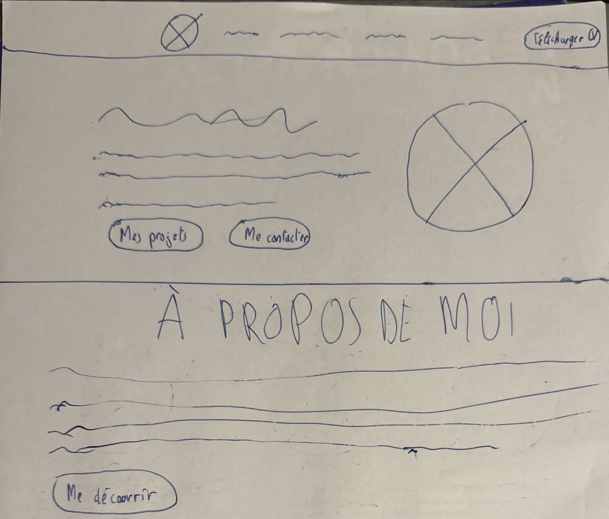
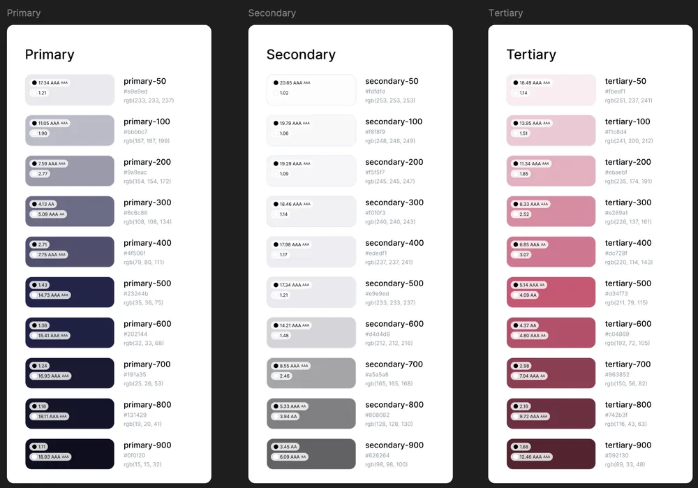
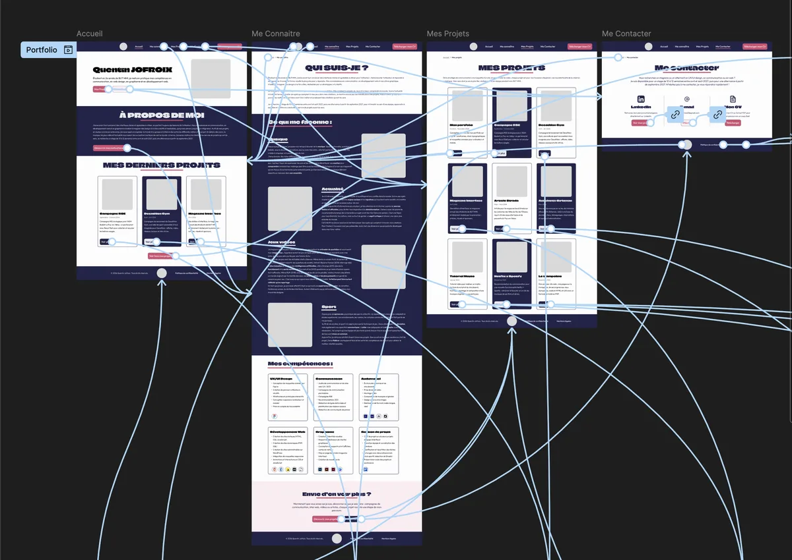

Mon portfolio
Conception de mon portfolio, du wireframe dessiné à la main jusqu’à la maquette animée sur Figma.
- Période
- Octobre - Novembre 2026
- Contexte
- Projet personnel
- Équipe
- Projet individuel
Le projet
Pour ma recherche de stage puis d’alternance, j’avais besoin d’un portfolio qui me ressemble et qui présente clairement mon parcours. Plutôt que de partir d’un modèle, j’ai conçu chaque page moi-même : l’accueil, la présentation de mon parcours, mes projets et la prise de contact.
Le site s’adresse à un public précis : des recruteurs qui ont peu de temps. Chaque page doit donc aller à l’essentiel, mettre en avant mes projets et donner envie de me contacter.
- 01
Réflexion
Contenus, couleurs, typographies, arborescence
- 02
Wireframes
Wireframes dessinés à la main pour chaque page
- 03
Maquettes
Composants, pages finales, prototype et animations
- 04
Développement
Codage par IA et vérification humaine
Ma démarche
J’ai mené ce projet seul, de la réflexion sur les contenus jusqu’aux maquettes animées :
- Contenus : rédaction des textes de présentation, de mes centres d’intérêt et de chaque projet.
- Wireframes : zoning de chaque page sur papier avant de passer sur Figma.
- Design system : palette de couleurs, styles de texte (Climate Crisis et Outfit) et composants réutilisables : boutons, cartes, labels, header et footer.
- Maquettes : pages pensées pour être développées, grâce à mes bases en code.
Les réalisations

Wireframes papier
Les premières ébauches faites à la main.

Design system
Couleurs, typographies et composants.

Maquettes animées
Les pages finales et leurs interactions.